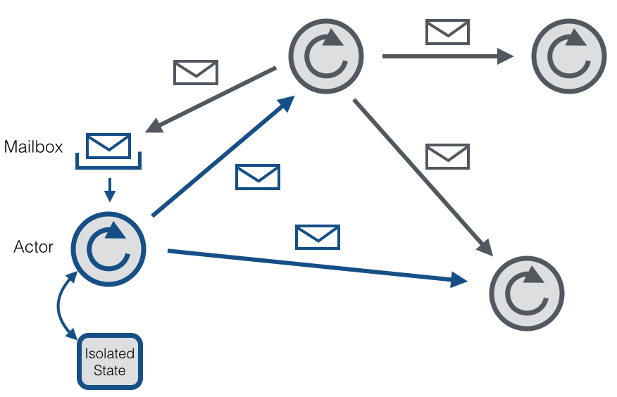
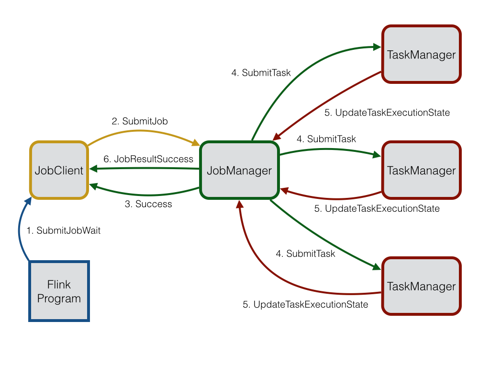

这篇文章主要介绍了Flink通过Akka实现的分布式通信。它第一次在0.9版本中出现。通过Akka，所有的远程程序调用被封装为异步消息。它主要涉及到JobManager、 TaskManager和JobClient三个组件。将来，它很可能在更多的组件中使用，从而使得它们可以发布和处理异步消息。
Akka和Actor模型
Akka是一个并行的、容错的和可扩容的的框架。它实现了Actor模型，与Erlang的并行模型类似。在Actor模型中，所有的实体被当作独立的actor。Actor之间通过发送异步消息来相互通信。Actor模型受异步机制启发。同时，它可以等待一个同步操作的响应。但是一般不建议使用同步消息，因为它们限制了系统的扩展性。每个Actor有一个信箱用来存储收到的消息。每个actor独自维持自己的状态。下面是actors的网络模型图：

每个Actor有一个单独的线程来拉取信箱中的消息并处理。作为已处理消息的结果，Actor可以改变其内部的状态，发送新的消息或者产生新的actors。如果这个内部状态的改变是专门线程处理的，那就不需要线程安全。尽管一个单独的actor是序列的，但是一个由一系列actor组成的系统就是高并发和可扩容的，因为处理线程在所有actor之间是共享的。这种分享也就是为什么不应该在actor线程中阻塞调用的原因。这种阻塞调用会阻止线程被其他actor用来处理自己的消息。
Actor系统
一个Actor系统包含了所有存活的actors。它提供的共享服务包括调度、配置和日志等。Actor系统同时包含一个线程池，所有actor从这里获取线程。
多个Actor系统可以在一台机器上共存。如果一个Actor系统通过RemoteActorRefProvider启动，它就可以被其他机器上的Actor系统发现。Actor系统能够自动识别消息是发送给本地机器还是远程机器的Actor系统。在本地通信的情况下，消息通过共享存储器高效的传输。在远程通信的情况下，消息通过网络栈发送。
所有Actors都是继承来组织的。每个新创建的actor将其创建的actor视作父actor。继承被用来监督。每个父actor对自己的子actor负责监督。如果在一个子actor发生错误，父actor将会收到通知。如果这个父actor可以解决这个问题，它就重新启动这个子actor。如果这个错误父actor无法处理，它可以把这个错误传递给自己的父actor。
第一个actor通过系统创建，由/user 这个actor负责监督。详细的Actor的继承制度可以参考[这边]( Escalating an error simply means that a hierarchy layer above the current one is now responsible for resolving the problem. Details about Akka’s supervision and monitoring can be found here.)。
Flink中的Actors
Actor是一个包含状态和行为的容器。actor线程顺序处理收到的消息。这样就让用户摆脱锁和线程管理的管理，因为一次只有已给线程对一个actor有效。但是，必须确保只有这个actor线程可以处理其内部状态。Actor的行为由receive函数定义，该函数包含收到的消息的处理逻辑。
Flink系统由3个分布式组件构成：JobClient，JobManager和TaskManager。JobClient从用户处得到Flink Job，并提交给JobManager。JobManager策划这个job的执行。首先，它分配所需的资源，主要就是TaskManagers上要执行的slot。
在资源分配之后，JobManager部署单独的任务到响应的TaskManager上。一旦收到一个任务，TaskManager产生一给线程用来执行这个任务。状态的改变，比如开始计算或者完成计算，将被发送回JobManager。基于这些状态的更新，JobManager将引导这个job的执行直到完成。一旦一个job被执行完，其结果将会被发送回JobClient。Job的执行图如下所示：

JobManager和TaskManager
JobManager是核心控制单元，负责执行整个Flink Job。它掌管资源分配，任务调度和状态汇报。
在一个Flink Job可以被执行之前，一个或则多个TaskManager需要被启动。TaskManager通过发送一个RegisterTaskManager消息给JobManager来注册。JobManager然后发送一个AcknowledgeRegistration消息来确认成功注册。以防TaskManager已经被JobManager注册，因为会有多个RegisterTaskManager消息被发送的情况，JobManager将会收到一个AlreadyRegistered消息。如果这个注册被拒绝，JobManager会收到一个RefuseRegistration消息。
通过发送一个SubmitJob消息和对应的JobGraph，一个job被提交给JobManager。在收到JobGraph后，JobManager创建一个ExecutionGraph，它是JobGraph的并行版本。这个ExecutionGraph包含部署到TaskManager的相关信息。
JobManager的调度器负责在可用的TaskManagers上分配执行的slots。在TaskManager上分配执行slot之后，SubmitTask消息和所有必要的信息被发送给相关的TaskManager。成功部署后会发送一个TaskOperationResult消息。一旦提交的任务被成功部署运行，那么这个job提交就被认为是成功的。JobManager通过发送一条success消息和对应的job id来通知JobClient。
TaskManagers上的运行任务的状态更新通过UpdateTaskExecutionstate消息来通知JobManager。通过这些更新消息，ExecutionGraph就能够更新反映当前的执行状态。
JobManager还充当数据源的输入拆分分配器。它负责在所有TaskManager中分配工作，以便尽可能保留数据的本地性。为了动态平衡负载，Tasks在完成处理一个数据后，会请求一个新的输入拆分。这个请求通过发送RequestNextInputSplit消息给JobManager来实现。JobManager将会回应一个NextInputSplit消息。如果没有更多的输入拆分，输入拆分包含的消息就是null。
Tasks在TaskManagers上是懒部署的。这意味着在生产者生产了一些数据之后，Tasks才会被部署。一旦生产者产生数据了，它会发送一个ScheduleOrUpdateConsumers消息给JobManager。这条消息意味着消费者现在可以读取新的数据了。如果消费task还没开始，它就会在TaskManger上部署。
JobClient
JobClient是用户面对的组件。它用来和JobManager通信，并负责提交Flink jobs，查询提交任务的状态和接收当前运行任务的状态信息。
JobClient同样也是一个Actor。这边存在2种关于任务提交的消息：SubmitJobDetached和SubmitJobWait。第一个消息提交任务和退出注册接收到的状态消息和任务结果。detached模式一般用于提交忘记模式。
SubmitJobWait消息提交任务给JobManager并且注册收到状态消息。内部的实现是通过产生一个helper actor来处理收到的状态消息。一旦这个任务被终止，JobManager发送JobResultSuccess消息、执行时间和累加结果给helper actor。一旦收到这个消息，这个helper actor传递这个消息给client。
异步 vs 同步消息
在任何地方，Flink尝试使用异步消息和通过futures来处理响应。Futures和很少的几个阻塞调用有一个超时时间，以防操作失败。这是为了防止死锁，当消息丢失或者分布式足觉crash。但是，如果在一个大集群或者慢网络的情况下，超时可能会使得情况更糟。因此，操作的超时时间可以通过“akka.timeout.timeout”来配置。
在两个actor可以通信之前，需要获取一个ActorRef。这个操作的查找同样需要一个超时。为了使得系统尽可能快速的失败，如果一个actor还没开始，超时时间需要被设置的比较小。为了以防经历查询超时，你可以通过“akka.lookup.timeout”配置增加查询时间。
Akka的另一个特点是限制发送的最大消息大小。原因是它保留了同样数据大小的序列化buffer和不想浪费空间。如果你曾经遇到过传输失败，因为消息超过了最大大小，你可以增加“akka.framesize”配置来增加大小。
失败检测
失败检测对分布式系统健壮性是非常重要的。当线上集群在运行的时候，总是会发生组件失败或者不可达。这种失败的原因是多方面的，可以从硬件问题到网络问题。健壮的分布式系统应该能够检测到失败的组件并恢复它。
Flink通过Akka的DeathWatch机制来检测失败的组件。DeathWatch允许actors查看其他的actors，即使这些actors不被这个actor监视，或者存活在另外一个actor系统中。一旦一个被监视的actor死亡或者不可达，一个结束的消息将被发送给这个watcher actor。当收到这条消息，系统可以进一步处理它。在内部，DeathWatch被当作一个心跳和一个失败检测器，基于这个心跳的间隔，心跳暂停和失败阀值，评估actor可能什么时候死亡的。心跳间隔可通过”akka.watch.heartbeat.pause”来配置。通过”akka.watch.heartbeat.pause”设置心跳暂停。心跳暂停应该要是心跳间隔的倍数，否则失败的心跳会触发DeathWatch。失败阀值可以通过”akka.watch.threshold”配置来设置。更多关于DeathWatch细节和失败检测能够在这边找到。
在Flink，JobManager观察所有注册的TaskManager，TaskManager观察其所对应的JobManager。通过这样，两个组件可以知道对方是否可达。JobManager在观察到TaskManager挂掉后后续就不会把任务派发给它。此外，JobManager还把挂掉的TaskManager上任务失败处理，同时在其他TaskManager上重新调度执行。为了以防短暂的连接丢失导致的TaskManager标记为挂掉，TaskManager可以在连接被重新建立之后简单的在JobManager上尝试重新注册。
TaskManager同样观察JobManager。当它检测到JobManager挂掉后，TaskManager失败处理所有的task，并且清空状态。此外，TaskManager将尝试重新连接JobManager，以防网络抖动导致的JobManager挂掉。
未来的开发
当前，只有3个组件，JobClient，JobManager和TaskManager使用Actors实现通信。为了更好的探索并行，需要更多的组件作为actors参与其中。未来，ExecutionGraph的ExecutionVertices，或者执行对象的通信也可以作为actors。这种细粒度的actor模型的优点是状态更新可以直接发送到相应的Execution对象。通过这种方式，JobManager可以从单点通信中解脱出来。
配置
akka.ask.timeout:Timeout used for all futures and blocking Akka calls. If Flink fails due to timeouts then you should try to increase this value. Timeouts can be caused by slow machines or a congested network. The timeout value requires a time-unit specifier (ms/s/min/h/d) (DEFAULT: 100 s).akka.lookup.timeout:Timeout used for the lookup of the JobManager. The timeout value has to contain a time-unit specifier (ms/s/min/h/d) (DEFAULT: 10 s).akka.framesize: Maximum size of messages which are sent between the JobManager and the TaskManagers. If Flink fails because messages exceed this limit, then you should increase it. The message size requires a size-unit specifier (DEFAULT: 10485760b).akka.watch.heartbeat.interval: Heartbeat interval for Akka’s DeathWatch mechanism to detect dead TaskManagers. If TaskManagers are wrongly marked dead because of lost or delayed heartbeat messages, then you should increase this value. A thorough description of Akka’s DeathWatch can be found here (DEFAULT: akka.ask.timeout/10).akka.watch.heartbeat.pause: Acceptable heartbeat pause for Akka’s DeathWatch mechanism. A low value does not allow a irregular heartbeat. A thorough description of Akka’s DeathWatch can be found here (DEFAULT: akka.ask.timeout).akka.watch.threshold: Threshold for the DeathWatch failure detector. A low value is prone to false positives whereas a high value increases the time to detect a dead TaskManager. A thorough description of Akka’s DeathWatch can be found here (DEFAULT: 12).akka.transport.heartbeat.interval: Heartbeat interval for Akka’s transport failure detector. Since Flink uses TCP, the detector is not necessary. Therefore, the detector is disabled by setting the interval to a very high value. In case you should need the transport failure detector, set the interval to some reasonable value. The interval value requires a time-unit specifier (ms/s/min/h/d) (DEFAULT: 1000 s).akka.transport.heartbeat.pause: Acceptable heartbeat pause for Akka’s transport failure detector. Since Flink uses TCP, the detector is not necessary. Therefore, the detector is disabled by setting the pause to a very high value. In case you should need the transport failure detector, set the pause to some reasonable value. The pause value requires a time-unit specifier (ms/s/min/h/d) (DEFAULT: 6000 s).akka.transport.threshold: Threshold for the transport failure detector. Since Flink uses TCP, the detector is not necessary and, thus, the threshold is set to a high value (DEFAULT: 300).akka.tcp.timeout: Timeout for all outbound connections. If you should experience problems with connecting to a TaskManager due to a slow network, you should increase this value (DEFAULT: akka.ask.timeout).akka.throughput: Number of messages that are processed in a batch before returning the thread to the pool. Low values denote a fair scheduling whereas high values can increase the performance at the cost of unfairness (DEFAULT: 15).akka.log.lifecycle.events: Turns on the Akka’s remote logging of events. Set this value to ‘on’ in case of debugging (DEFAULT: off).akka.startup-timeout: Timeout after which the startup of a remote component is considered being failed (DEFAULT: akka.ask.timeout).